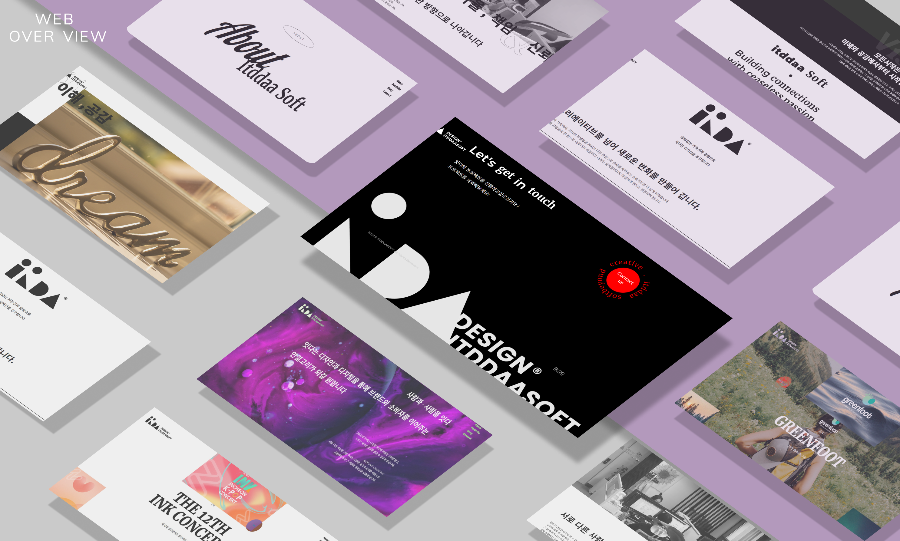

Itddaa
Scroll Down
깃허브
사이트 바로가기
사용한 SKILLS
HTML , SASS , JQUERY
제작기간
3일 소요
제작 기여도
100% ( 개인프로젝트 )
학습 내용
화면의 일정 높이에 도달했을시에 css의 변화를 주기위해 gsap.js의 scrolltrigger 기능을 이용하였으며, throttle함수 이용하여 마우스의 실시간 좌표를 구함과 동시에 style을 부여하는 기능 구현
